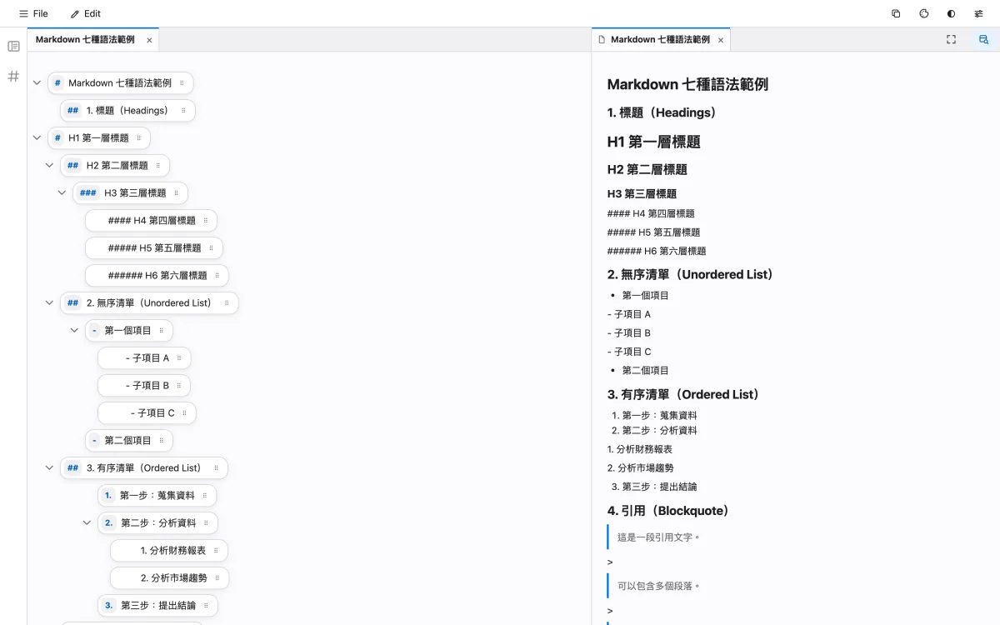

RAGDEMO.WIN
把複雜，
整理成清晰。
兩個為深度工作而生的工具。
一個讓提示詞更有結構，一個讓考試準備更有方向。
本機優先 · 零後端 · 無追蹤
THE TOOLS
兩個工具，
各自專注。
不同領域，同一種設計選擇：把複雜留給結構，把專注還給你。
01 — PROMPTER
Prompter
以區塊為單位，重寫你和 AI 的對話方式。
把 Markdown 提示詞拆成一個一個區塊。拖曳排序、層級聚焦、即時預覽，讓長提示詞像樂高一樣被組裝、被理解。文件、圖片與設定都留在你的瀏覽器裡。
- 區塊式編輯
- 標題、段落、清單各自獨立；拖曳、複選、收合都在彈指之間。
- 即時預覽
- Markdown、表格、程式碼與 KaTeX 公式同步呈現，所見即所得。
- 本機文件庫
- 使用 IndexedDB 儲存最近文件，沒有帳號，也不經過伺服器。
- 離線優先
- 所有資源隨專案提供，不載入 CDN；沒有網路也能工作。

區塊式編輯 × 即時 Markdown 預覽